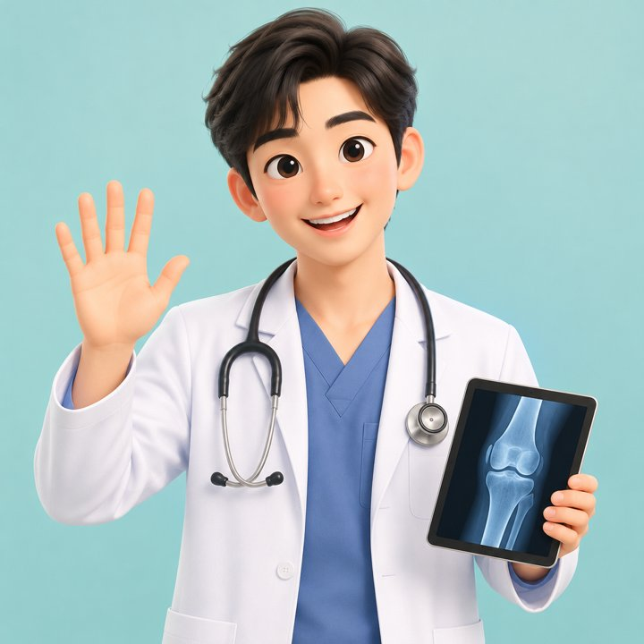

안녕하세요, AI 닥터 김닥터모입니다.
오늘은 풋살하다 다친 래규 님의 왼쪽 무릎을 같이 살펴보겠습니다. 아래 판독지부터 보시고, 궁금한 항목은 탭을 눌러 열어 보세요.
진짜 의사가 아니라, 공개 의학 자료를 정리해 주는 AI 캐릭터입니다.
무릎 판독지 · 참고용
래규 왼쪽 무릎 판독지
추정
바깥쪽 연골판 또는 바깥쪽 인대의 부분 손상일 가능성이 가장 높고, 다친 날 부었기 때문에 십자인대 손상도 배제할 수 없습니다. 아래 '얼마나' 단계로는 중에 해당한다고 봅니다.
의사가 쓴 진단서가 아닙니다. 대화 내용과 공개 의학 자료를 맞춰 본 참고용 정리이고, 확진은 정형외과 진찰과 MRI로만 할 수 있습니다.
AI 생성 애니메이션 · 기전 이해용